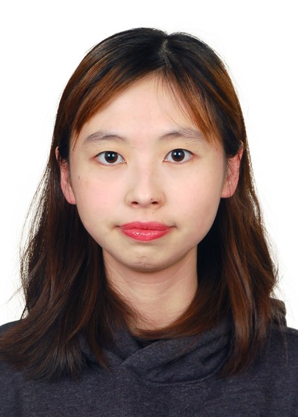
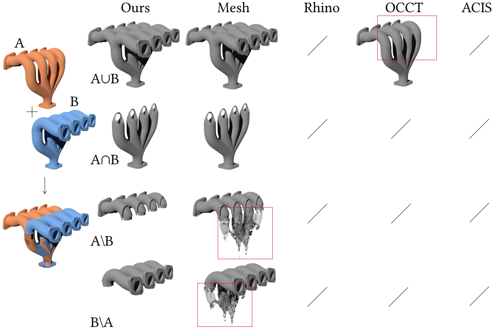
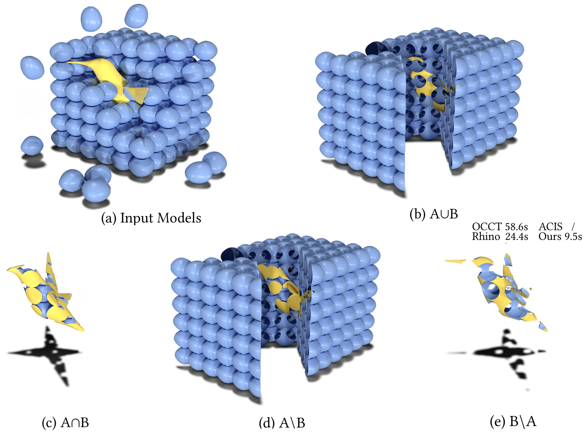
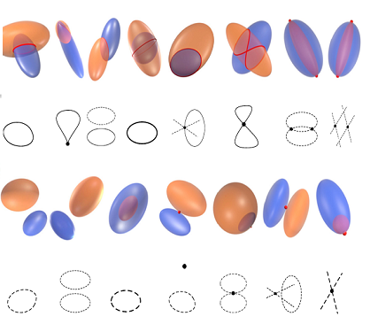
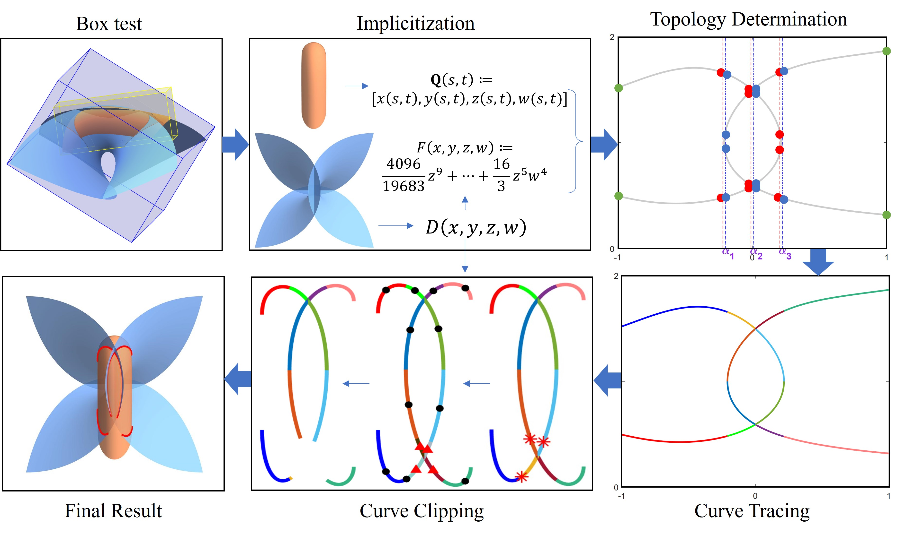

|  |
Jieyin Yang （杨婕吟）
|
Biography
I am currently pursuing the Phd degree at the Academy of Mathematics and Systems Science, Chinese Academy of Sciences (AMSS) and University of Chinese Academy of Sciences (UCAS). My supervisor is Prof. Xiaohong Jia. Before that, I received my Bachelor's degree of mathematics from UCAS in 2021.
My research interest includes computer graphics, computer aided design and computer aided geometric design.
Publications
|

|
Overlap Region Extraction of Two NURBS Surfaces.
Jieyin Yang, Xiaohong Jia ACM Transactions on Graphics (Siggraph Asia), Vol. 44, 2025. |
|

|
Boolean Operation for CAD Models Using a Hybrid Representation.
Yingyu Yang, Xiaohong Jia, Bolun Wang, Jieyin Yang, Shiqing Xin, Dong-Ming Yan ACM Transactions on Graphics (Siggraph), Vol. 44, 2025. |
|

|
Computing the intersection of two ellipsoids based on a fast algebraic topology determination strategy.
Xiao Chu, Kai Li, Xiaohong Jia, Jieyin Yang, Jiarui Kang Computer Aided Geometric Design (GMP), Vol. 119, 2025. |

|
Accurate and robust registration of low overlapping point clouds.
Jieyin Yang, Mingyang Zhao, Yingrui Wu, Xiaohong Jia Computers & Graphics, 2024. |
|

|
Topology Guaranteed B-Spline Surface-Surface Intersection.
Jieyin Yang, Xiaohong Jia, Dong-Ming Yan ACM Transactions on Graphics (Siggraph Asia), Vol. 42, 2023. |
Honorary Awards
| 2025 | CSIAM Applied Mathematics Achievement Award (CSIAM应用数学落地成果奖) |
| 2024 | Doctoral National Scholarship (博士国家奖学金) |
| 2023 | Hua Luogeng Scholarship of AMSS (中科院数学院华罗庚奖学金) |
| 2021-2025 (4 years) | Excellent Merit Student of CAS (中科院优秀三好学生) |
| 2020 | Undergraduate National Scholarship (本科国家奖学金) |